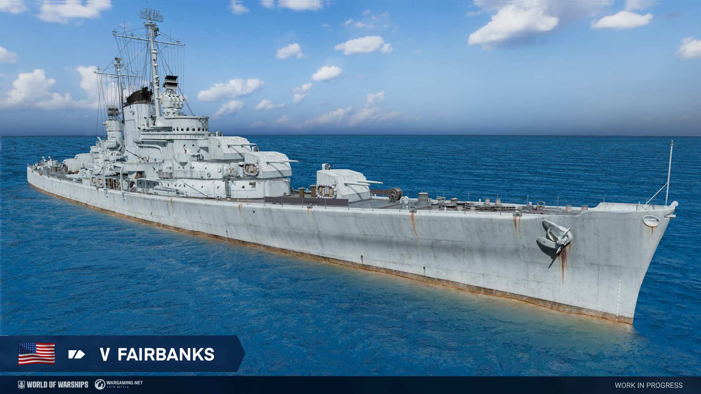
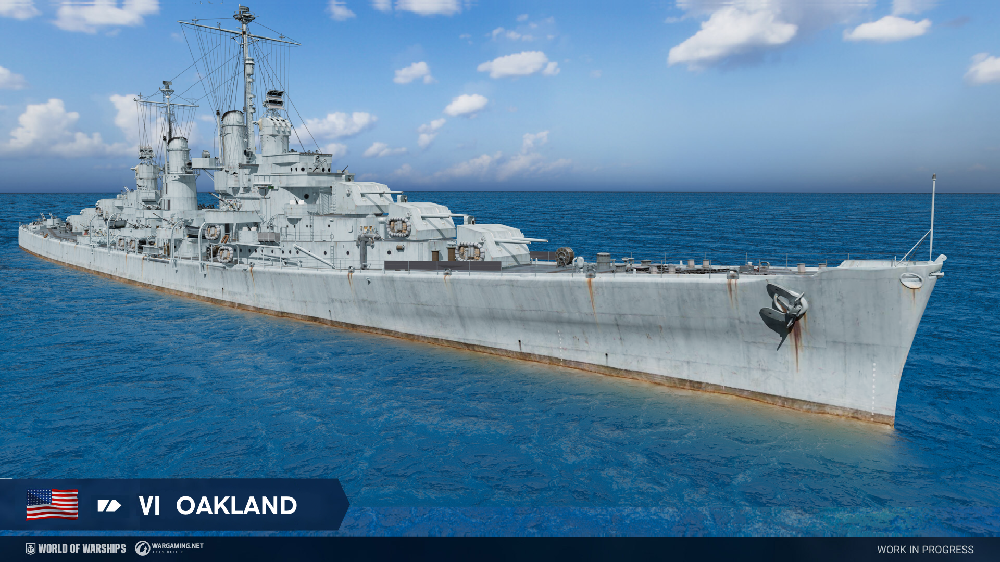
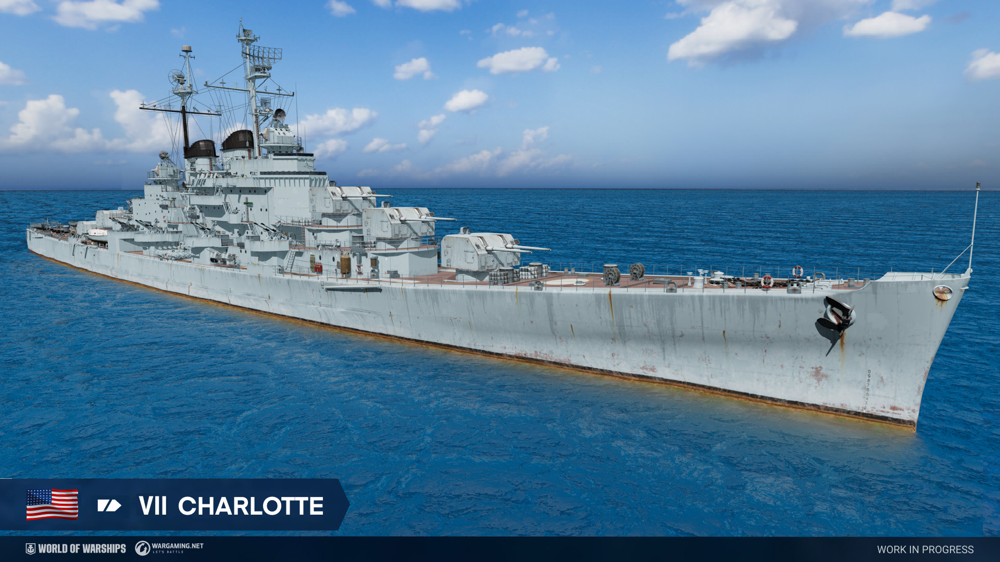
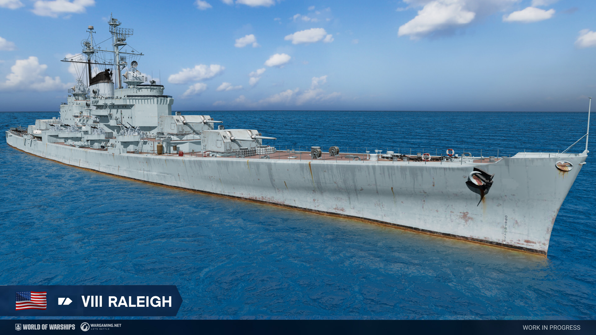
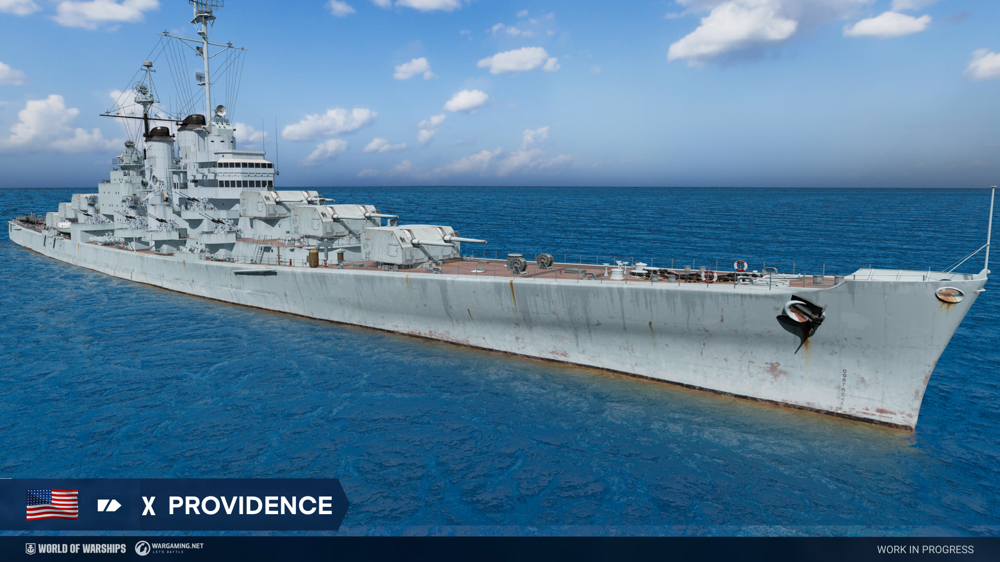
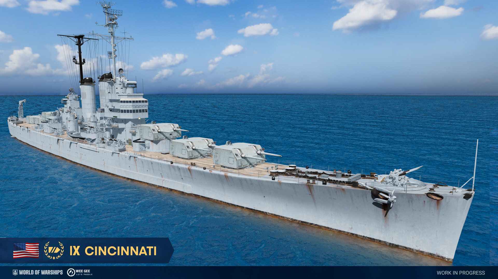
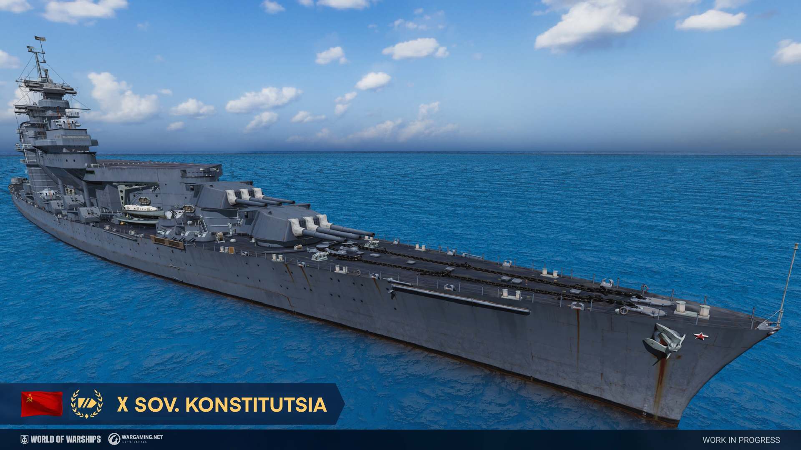

A second branch of American light cruisers has been added to the game for testing, as well as American cruiser Cincinnati and Soviet hybrid battleship Sovietskaya Konstitutsia.
For the upcoming closed testing session, a new branch of American light cruisers will be added to the game.
In the current concept, these newcomers are designed for mid-range combat, where they will support allied destroyers and ambush enemy destroyers and light cruisers with their potent main battery that offers both AP shells with exceedingly good penetration at higher tiers and SAP shells with high alpha damage, as well as deadly but short-ranged torpedoes.
With all of these ships in the branch being based off of either real or planned anti-aircraft cruisers, it will come as no surprise that these cruisers will excel as anti-aircraft escorts, boasting strong AA stats that will be further strengthened by having access to a special “Emergency Defensive AA” consumable at Tier VIII and onwards.
Key characteristics of the ships will be superbly high speed, good maneuverability, best in-class concealment and powerful AA . This is offset by a small healthpool, weak armor and the lack of the smokescreen generator typically found on ships of this type. This will put emphasis on aggressive, ambush-focused gameplay rather than the relatively passive playstyle typically associated with light cruisers.
These vessels will come equipped with “Speed Boost”, “Hydroacoustic Search” (which can be replaced by “Surveillance Radar” at Tier VIII and onwards), and will gain access to the “Repair Party” consumable starting at Tier VIII.
American cruiser Fairbanks, Tier V

A design for a small light cruiser that preceded the Atlanta-class. The ship is armed with modern dual-purpose 127 mm guns and a strong anti-aircraft suite for the time.
American cruiser Fairbanks, Tier V
Hit points – 20400. Plating - 10 mm.
Main battery - 5x2 127 mm. Firing range - 12.8 km.
Maximum SAP shell damage - 2700. SAP shell armor penetration - 36 mm.
SAP initial velocity - 792 m/s.
Maximum AP shell damage - 2100. AP initial velocity - 792 m/s.
Reload time - 6.5 s. 180 degree turn time - 7.2 s. Maximum dispersion - 116 m. Sigma -
2.05.
Depth charges:
Maximum damage - 3200.0. Number of charges -2. Bombs in a charge - 4. Reload time - 40.0s.
Torpedo tubes - 2x4 533 mm
Maximum damage - 16.633. Range - 4.5 km. Speed - 65 kt. Reload time - 98 s. Launcher 180 degree turn time - 7.2 s. Torpedo detectability - 0.8 km.
AA defense: 13x1 20.0 mm., 1x4 40.0 mm., 5x2 40.0 mm., 5x2 127.0 mm.
AA defense short-range: continuous damage per second - 71, hit probability - 85 %,
action zone - 2.4 km;
AA defense mid-range: continuous damage per second - 120, hit probability - 90 %, action
zone - 3.5 km;
AA defense long-range: continuous damage per second - 80, hit probability - 90 %, action
zone - 5.8 km;
Number of explosions in a salvo - 5, damage within an explosion - 1470, action zone 3.5 - 5.8 km.
Maximum speed - 34.2 kt. Turning circle radius - 570 m. Rudder shift time - 8.4 s.
Surface detectability - 8.9 km. Air detectability - 5.9 km.
Detectability after firing main guns in smoke - 4.6 km.
Available consumables:
- 1 slot - Damage Control Party
- 2 slot - Hydroacoustic search (Duration time 100 s; Torpedo detection range 3 km; Ship detection range 4.0 km; Reload time 120 s; Charges 3)
All stats are listed without crew and upgrade modifiers but with best available modules. The stats are subject to change during the testing.
American cruiser Oakland, Tier VI

A modified Atlanta-class cruiser, the first of a group of four sometimes referred to as the “Oakland-class”. The principal difference between the two classes being that the Oakland class did not carry the two wing-mounted 127 mm guns, instead receiving two additional 40 mm Bofors anti-aircraft mounts.
American cruiser Oakland, Tier VI
Hit points – 21600. Plating - 10 mm.
Main battery - 6x2 127 mm. Firing range - 13.2 km.
Maximum SAP shell damage - 2700. SAP shell armor penetration - 36 mm.
SAP initial velocity - 792 m/s.
Maximum AP shell damage - 2100. AP initial velocity - 792 m/s.
Reload time - 6.5 s. 180 degree turn time - 7.2 s. Maximum dispersion - 119 m. Sigma -
2.05.
Depth charges:
Maximum damage - 3800.0. Number of charges -2. Bombs in a charge - 8. Reload time - 40.0s.
Torpedo tubes - 2x4 533 mm
Maximum damage - 16.633. Range - 4.5 km. Speed - 65 kt. Reload time - 98 s. Launcher 180 degree turn time - 7.2 s. Torpedo detectability - 0.8 km.
AA defense: 16x1 20.0 mm., 1x4 40.0 mm., 5x2 40.0 mm., 6x2 127.0 mm.
AA defense short-range: continuous damage per second - 91, hit probability - 85 %,
action zone - 2.4 km;
AA defense mid-range: continuous damage per second - 202, hit probability - 90 %, action
zone - 3.5 km;
AA defense long-range: continuous damage per second - 117, hit probability - 90 %, action
zone - 5.8 km;
Number of explosions in a salvo - 6, damage within an explosion - 1470, action zone 3.5 - 5.8 km.
Maximum speed - 32.5 kt. Turning circle radius - 610 m. Rudder shift time - 8.4 s.
Surface detectability - 9.7 km. Air detectability - 6.4 km.
Detectability after firing main guns in smoke - 4.8 km.
Available consumables:
- 1 slot - Damage Control Party
- 2 slot - Engine Boost (Duration time 120 s; Maximum speed +15%; Reload time 90 s; Charges 3)
- 3 slot - Hydroacoustic search (Duration time 100 s; Torpedo detection range 3 km; Ship detection range 4.0 km; Reload time 120 s; Charges 3)
All stats are listed without crew and upgrade modifiers but with best available modules. The stats are subject to change during the testing.
American cruiser Charlotte, Tier VII

A design for a potential follow-up to the Atlanta-class. The design featured increased dimensions and more modern guns in an improved turret.
American cruiser Charlotte, Tier VII
Hit points – 28400. Plating - 10 mm.
Main battery - 5x2 127 mm. Firing range - 13.5 km.
Maximum SAP shell damage - 2900. SAP shell armor penetration - 36 mm.
SAP initial velocity - 808 m/s.
Maximum AP shell damage - 2200. AP initial velocity - 808 m/s.
Reload time - 5.0 s. 180 degree turn time - 4.5 s. Maximum dispersion - 121 m. Sigma -
2.05.
Depth charges:
Maximum damage - 3800.0. Number of charges -2. Bombs in a charge - 10. Reload time - 40.0s.
Torpedo tubes - 2x4 533 mm
Maximum damage - 16.633. Range - 4.5 km. Speed - 65 kt. Reload time - 98 s. Launcher 180 degree turn time - 7.2 s. Torpedo detectability - 0.8 km.
AA defense: 6x2 20.0 mm., 4x1 20.0 mm., 1x4 40.0 mm., 9x4 40.0 mm., 5x2 127.0 mm.
AA defense short-range: continuous damage per second - 75, hit probability - 85 %,
action zone - 2.4 km;
AA defense mid-range: continuous damage per second - 243, hit probability - 90 %, action
zone - 3.5 km;
AA defense long-range: continuous damage per second - 175, hit probability - 90 %, action
zone - 6.0 km;
Number of explosions in a salvo - 5, damage within an explosion - 1550, action zone 3.5 - 6.0 km.
Maximum speed - 36.5 kt. Turning circle radius - 630 m. Rudder shift time - 8.4 s.
Surface detectability - 10.0 km. Air detectability - 6.8 km.
Detectability after firing main guns in smoke - 4.9 km.
Available consumables:
- 1 slot - Damage Control Party
- 2 slot - Engine Boost (Duration time 120 s; Maximum speed +15%; Reload time 90 s; Charges 3)
- 3 slot - Hydroacoustic search (Duration time 100 s; Torpedo detection range 3 km; Ship detection range 4.0 km; Reload time 120 s; Charges 3)
All stats are listed without crew and upgrade modifiers but with best available modules. The stats are subject to change during the testing.
American cruiser Raleigh, Tier VIII

One of the potential follow up designs for the Atlanta-class armed with experimental 137 mm guns that were being developed by the US-Navy during World War II.
American cruiser Raleigh, Tier VIII
Hit points – 30500. Plating - 16 mm.
Main battery - 4x2 137 mm. Firing range - 13.9 km.
Maximum SAP shell damage - 3150. SAP shell armor penetration - 39 mm.
SAP initial velocity - 823 m/s.
Maximum AP shell damage - 2700. AP initial velocity - 823 m/s.
Reload time - 4.0 s. 180 degree turn time - 6.2 s. Maximum dispersion - 123 m. Sigma -
2.05.
Depth charges:
Maximum damage - 5100.0. Number of charges -2. Bombs in a charge - 8. Reload time - 40.0s.
Torpedo tubes - 2x4 533 mm
Maximum damage - 19.300. Range - 4.5 km. Speed - 69 kt. Reload time - 90 s. Launcher 180 degree turn time - 7.2 s. Torpedo detectability - 0.8 km.
AA defense: 6x2 20.0 mm., 8x1 20.0 mm., 9x2 76.0 mm., 4x2 137.0 mm.
AA defense short-range: continuous damage per second - 141, hit probability - 85 %,
action zone - 2.0 km;
AA defense mid-range: continuous damage per second - 270, hit probability - 90 %, action
zone - 4.0 km;
AA defense long-range: continuous damage per second - 155, hit probability - 90 %, action
zone - 6.6 km;
Number of explosions in a salvo - 8, damage within an explosion - 1650, action zone 3.5 - 6.6 km.
Maximum speed - 39.4 kt. Turning circle radius - 670 m. Rudder shift time - 8.8 s.
Surface detectability - 10.1 km. Air detectability - 7.2 km.
Detectability after firing main guns in smoke - 5.4 km.
Available consumables:
- 1 slot - Damage Control Party
- 2 slot - Engine Boost (Duration time 120 s; Maximum speed +15%; Reload time 90 s; Charges 3)
- 3 slot - Hydroacoustic search / Surveillance radar (Duration time 20 s; Ship detection range 7.5 km; Reload time 120 s; Charges 3)
- 4 slot - Emergency Defensive AA Fire (Duration time 15 s; continous damage +200%; Reload time 60 s; Charges unlimited)
- 5 slot - Repair Party (Duration time 20 s; HP per second 152.5; Reload time 80 s; Charges 2)
All stats are listed without crew and upgrade modifiers but with best available modules. The stats are subject to change during the testing.
American cruiser Long Beach, Tier IX

A potential follow-up designs for the Atlanta-class with increased dimensions and an armament of ten 137 mm guns.
American cruiser Long Beach, Tier IX
Hit points – 34800. Plating - 16 mm.
Main battery - 5x2 137 mm. Firing range - 14.2 km.
Maximum SAP shell damage - 3150. SAP shell armor penetration - 39 mm.
SAP initial velocity - 823 m/s.
Maximum AP shell damage - 2700. AP initial velocity - 823 m/s.
Reload time - 4.0 s. 180 degree turn time - 6.2 s. Maximum dispersion - 124 m. Sigma -
2.05.
Depth charges:
Maximum damage - 5100.0. Number of charges -2. Bombs in a charge - 12. Reload time - 40.0s.
Torpedo tubes - 2x4 533 mm
Maximum damage - 19.300. Range - 6.0 km. Speed - 69 kt. Reload time - 95 s. Launcher 180 degree turn time - 7.2 s. Torpedo detectability - 0.8 km.
AA defense: 12x1 20.0 mm., 9x2 76.0 mm., 5x2 137.0 mm.
AA defense short-range: continuous damage per second - 113, hit probability - 85 %,
action zone - 2.0 km;
AA defense mid-range: continuous damage per second - 315, hit probability - 90 %, action
zone - 4.0 km;
AA defense long-range: continuous damage per second - 185, hit probability - 90 %, action
zone - 6.6 km;
Number of explosions in a salvo - 8, damage within an explosion - 1650, action zone 3.5 - 6.6 km.
Maximum speed - 41.7 kt. Turning circle radius - 690 m. Rudder shift time - 9.2 s.
Surface detectability - 10.3 km. Air detectability - 7.4 km.
Detectability after firing main guns in smoke - 5.5 km.
Available consumables:
- 1 slot - Damage Control Party
- 2 slot - Engine Boost (Duration time 120 s; Maximum speed +15%; Reload time 90 s; Charges 3)
- 3 slot - Hydroacoustic search / Surveillance radar (Duration time 20 s; Ship detection range 7.5 km; Reload time 120 s; Charges 3)
- 4 slot - Emergency Defensive AA Fire (Duration time 20 s; continous damage +200%; Reload time 60 s; Charges unlimited)
- 5 slot - Repair Party (Duration time 20 s; HP per second 696.0; Reload time 80 s; Charges 2)
All stats are listed without crew and upgrade modifiers but with best available modules. The stats are subject to change during the testing.
American cruiser Providence, Tier X

A large anti-air escort armed with twelve 137 mm guns that could have been developed after the second World War.
American cruiser Providence, Tier X
Hit points – 36400. Plating - 16 mm.
Main battery - 6x2 137 mm. Firing range - 14.5 km.
Maximum SAP shell damage - 3150. SAP shell armor penetration - 39 mm.
SAP initial velocity - 823 m/s.
Maximum AP shell damage - 2700. AP initial velocity - 823 m/s.
Reload time - 4.0 s. 180 degree turn time - 6.2 s. Maximum dispersion - 126 m. Sigma -
2.05.
Depth charges:
Maximum damage - 5100.0. Number of charges -2. Bombs in a charge - 12. Reload time - 40.0s.
Torpedo tubes - 2x4 533 mm
Maximum damage - 19.300. Range - 6.0 km. Speed - 69 kt. Reload time - 95 s. Launcher 180 degree turn time - 7.2 s. Torpedo detectability - 0.8 km.
AA defense: 12x1 20.0 mm., 11x2 76.0 mm., 6x2 137.0 mm.
AA defense short-range: continuous damage per second - 124, hit probability - 85 %,
action zone - 2.0 km;
AA defense mid-range: continuous damage per second - 453, hit probability - 90 %, action
zone - 4.0 km;
AA defense long-range: continuous damage per second - 232, hit probability - 90 %, action
zone - 6.6 km;
Number of explosions in a salvo - 12, damage within an explosion - 1650, action zone 3.5 - 6.6 km.
Maximum speed - 42.5 kt. Turning circle radius - 720 m. Rudder shift time - 9.3 s.
Surface detectability - 10.5 km. Air detectability - 8.8 km.
Detectability after firing main guns in smoke - 5.7 km.
Available consumables:
- 1 slot - Damage Control Party
- 2 slot - Engine Boost (Duration time 120 s; Maximum speed +15%; Reload time 90 s; Charges 3)
- 3 slot - Hydroacoustic search / Surveillance radar (Duration time 30 s; Ship detection range 7.5 km; Reload time 120 s; Charges 3)
- 4 slot - Emergency Defensive AA Fire (Duration time 20 s; continous damage +200%; Reload time 60 s; Charges unlimited)
- 5 slot - Repair Party (Duration time 20 s; HP per second 728.0; Reload time 80 s; Charges 3)
All stats are listed without crew and upgrade modifiers but with best available modules. The stats are subject to change during the testing.
American cruiser Cincinnati, Tier IX

One of the designs for a modern light cruiser that preceded the Worcester-class. The ship has been rearmed with twelve 137 mm guns.
American cruiser Cincinnati, Tier IX
Hit points – 39800. Plating - 25 mm.
Main battery - 6x2 137 mm. Firing range - 15.5 km.
Maximum HE shell damage - 2000. HE shell armor penetration - 23 mm.
HE initial velocity - 823 m/s.
Maximum AP shell damage - 2700. AP initial velocity - 823 m/s.
Reload time - 4.0 s. 180 degree turn time - 6.2 s. Maximum dispersion - 124 m. Sigma -
2.05.
Depth charges:
Maximum damage - 5100.0. Number of charges -2. Bombs in a charge - 12. Reload time - 40.0s.
AA defense: 4x1 20.0 mm., 12x2 76.0 mm., 6x2 137.0 mm.
AA defense short-range: continuous damage per second - 32, hit probability - 85 %,
action zone - 2.0 km;
AA defense mid-range: continuous damage per second - 324, hit probability - 90 %, action
zone - 4.0 km;
AA defense long-range: continuous damage per second - 232, hit probability - 90 %, action
zone - 6.6 km;
Number of explosions in a salvo - 12, damage within an explosion - 1650, action zone 3.5 - 6.6 km.
Maximum speed - 34.7 kt. Turning circle radius - 680 m. Rudder shift time - 14.2 s.
Surface detectability - 12.3 km. Air detectability - 8.4 km.
Detectability after firing main guns in smoke - 5.5 km.
Available consumables:
- 1 slot - Damage Control Party
- 2 slot - Hydroacoustic search
- 3 slot - Surveillance radar (Duration time 30 s; Ship detection range 7.5 km; Reload time 120 s; Charges 3)
- 4 slot - Emergency Defensive AA Fire (Duration time 20 s; continous damage +200%; Reload time 90 s; Charges unlimited)
- 5 slot - Repair Party (Duration time 20 s; HP per second 696.0; Reload time 80 s; Charges 2)
All stats are listed without crew and upgrade modifiers but with best available modules. The stats are subject to change during the testing.
Soviet Battleship Sovietskaya Konstitutsia, Tier X

A unique design for a powerful battleship hybrid developed by Gibbs and Cox in the United States in the second half of the 1930s for the Soviet Union (Project 1058). Sovietskaya Konstitutsia is armed with twelve 406-mm guns in four turrets. The battleship features a good firing range along with the dispersion formula commonly found on Soviet Battleships and a large amount of HP.
According to the original concept, the ship is armed with a squadron of skip bombers with a small healthpool, comparatively low speed and a long reload. To offset this, these aircraft will be armed with powerful bombs very similar to those found on Tier X carrier Admiral Nakhimov.
Soviet Battleship Sovietskaya Konstitutsia, Tier X
Hit points – 101300. Plating - 32 mm. Torpedo protection - 35 %.
Main battery - 4x3 406 mm, . Firing range - 23.8 km.
Maximum HE shell damage - 5850. HE shell armor penetration - 68 mm. Chance to cause fire
- 36%. HE initial velocity - 793 m/s.
Maximum AP shell damage - 13100. AP initial velocity - 793 m/s.
Reload time - 33.0 s. 180 degree turn time - 45.0 s. Maximum dispersion - 268 m. Sigma -
1.60.
Airstrike (DC):
Reload time - 30.0 s. Available flights - 2. Number of Aircraft in Attacking Flight - 1.
Maximum range - 11.0 km. Number of Bombs in Payload - 1. Maximum bomb damage -
2600.0.
Secondary Armament:
12x2 100.0 mm, range 7.3 km.
Maximum HE shell damage - 1400. Chance to cause fire - 9%. HE initial velocity - 808
m/s
AA defense: 19x2 25.0 mm., 12x4 37.0 mm., 12x2 100 mm.
AA defense short-range: continuous damage per second - 292, hit probability - 70 %,
action zone - 3.1 km;
AA defense mid-range: continuous damage per second - 262, hit probability - 75 %, action
zone - 4.0 km;
AA defense long-range: continuous damage per second - 161, hit probability - 75 %,
action zone - 5.8 km;
Number of explosions in a salvo - 12, damage within an explosion - 1330, action zone 3.5
- 5.8 km.
Aircraft:
Skip bombers
Hit points - 1190, cruising speed - 112.0 knots, maximum speed - 147.0 knots, size of attacking flight - 6,
aircraft per squadron - 5, aircraft restoration time - 150 s, detectability range - 10.0 km,
number of aircraft on deck - 6. Bombs in payload - 1, bomb type - HE, maximum bomb damage - 8700,
armor penetration - 55 mm, chance to cause fire – 49 %.
Maximum speed - 29.0 kt. Turning circle radius - 1050 m. Rudder shift time - 18.6 s.
Surface detectability - 16.6 km. Air detectability - 14.3 km. Detectability after firing
main guns in smoke - 16.8 km.
Available consumables:
- 1 slot - Fast Damage Control Team
- 2 slot - Repair Party
- 3 slot - Fighter
All stats are listed without crew and upgrade modifiers but with best available modules. The stats are subject to change during the testing.
Please note that all information in the development blog is preliminary. Announced adjustments and features may change multiple times during testing. The final information will be published on our game's website.